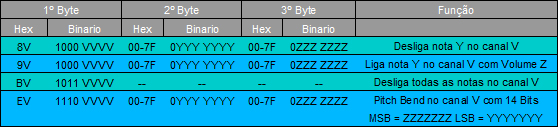
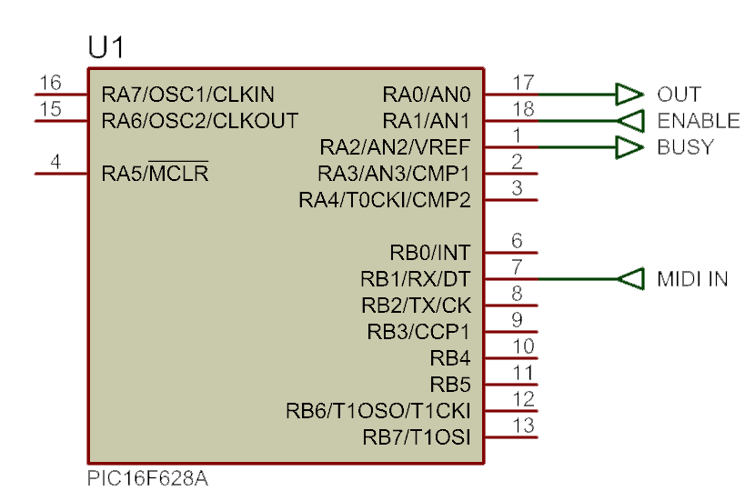
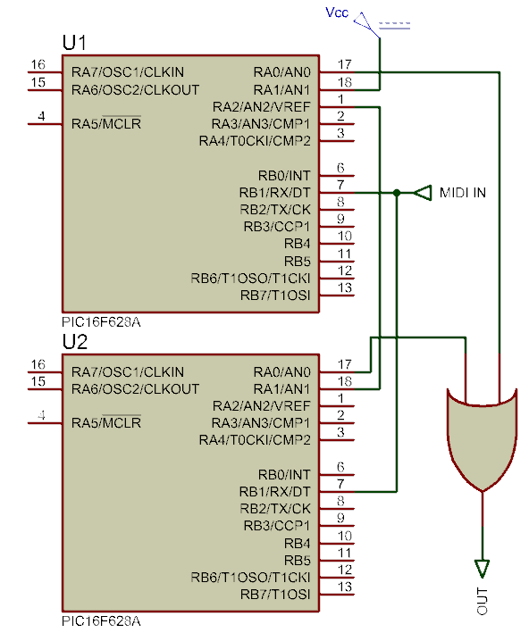
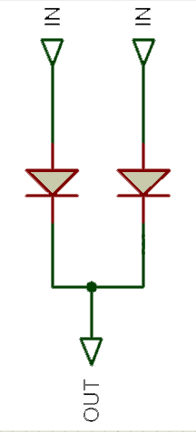

- Introdução
Bom, muitos sabem que eu fiz um Interruptor MIDI (ou sintetizador como preferir) com um FPGA. Porém poucos tem acesso a um FPGA principalmente para fazer algo tão *simples*, então resolvi fazer um com PIC 16F628A.
No começo queria fazer com um PIC menor, mas os menores não tem Receptor Serial via hardware, então ficaria mais complicado implementar. Outro ponto, é que o preço dos PIC's menores são praticamente os mesmos, então era só uma questão de espaço mesmo. Usando um PIC maior, fica mais espaço livre para futuras modificações caso seja necessário.
O PIC 16F628A tem 2KB de memoria flash, 224 Bytes de RAM, 128 Bytes de EEPROM, um Comparador, 3 Timers, e um Receptor Serial Universal. Está no pacote DIP de 18 Pinos, e ele tem 2 portas de 8 bits (dependendo da configuração, a porta A pode *perder* 3 bits.
Datasheet dele: http://ww1.microchip.com/downloads/en/DeviceDoc/40044F.pdf
Ele tem um oscilador RC Interno de 4MHz calibrado de fábrica para +/- 1%, então podemos fazer uso dele tranquilamente.
- Protocolo MIDI
Vamos falar um pouco antes do protocolo MIDI. O Sinal MIDI é basicamente um sinal Serial parecido com padrão RS232. São 10 bits enviados, um bit para identificar o inicio (start bit), 8 bits de dados, e um bit para identificar o fim (stop bit). Ele só não se encaixa na RS232 por causa de sua Baud Rate (velocidade com que os bits são transmitidos), que é 31250 Hz (ou 31.25 kBits por segundo). Por apenas sua Baud Rate ser fora de padrão, podemos usar a porta serial universal do PIC, apenas usando 31250 como Baud Rate.
Outro ponto do Protocolo MIDI, é que todo dado MIDI é composto por 3 Bytes (24 bits), sendo o primeiro deles o byte de Operação, e os outros dois bytes de Dados. Para uma identificação mais fácil de qual é qual, foi padronizado que se o primeiro bit (MSB) do byte for 1, é uma Operação, se for 0 é Dado. Assim caso a transmissão de algum byte falhe (principalmente o primeiro) é possível saber.
A tabela simplificada abaixo associa os modos de operação e a função de seus dados:

Na tabela só está os mais comuns e tirando o Pitch Bend, os que vamos usar.
Iremos então fazer o PIC ler 3 bytes, e depois efetuar as operações necessárias de acordo com o primeiro byte.
- Notas musicais e Timer do PIC
Outro detalhe importante são as notas musicais. O MIDI apenas envia o numero da nota, que varia de 0 a 127. Precisamos então calcular o período das notas.
A frequência de uma dada nota musical, tem que dobrar a cada 12 notas. Para isso é dada a fórmula:
Frequência = FreqBase * 2^(n/12)
Onde Frequência é a frequência da nota que queremos, FreqBase é a frequência da nota base, n é o numero da nota relativa a nota base. A nota que usaremos como base é a 10ª nota, que tem sua frequência em 27.5Hz. Para calcularmos o período de uma nota é só pegarmos o inverso da frequência:
Período = 1 / ( FreqBase * 2^(n/12) )
Até podemos calcular isso em tempo real no PIC, porém podem haver atrasos muito grandes, então faremos uma tabela com os períodos das notas para usarmos.
Podemos usar o seguinte código em PHP para calcularmos as frequências:
for($i=0;$i<128;$i++) {
$freq = 27.5 * pow(2,($i-9)/12);
echo("Nota: $i Frequência: $freq\r\n");
}
?>
Link do Codepad: http://codepad.org/4GloHc3b
De maneira semelhante podemos fazer para o período:
for($i=0;$i<128;$i++) {
$period = 1/ (27.5 * pow(2,($i-9)/12));
echo("Nota: $i Periodo: $period\r\n");
}
?>
Link do Codepad: http://codepad.org/yqXDTXQZ
No PIC, usaremos o TIMER1 como referência, ele é um timer de 16 bits, ou seja conta de 0 a 65535. Faremos ele incrementar de 1 em 1 micro segundo, então colocaremos o período em micro segundos. Outro detalhe é que depois que o timer está rodando, não podemos para-lo. Precisamos esperar ele chegar até o fim, então faremos ele contar apenas o necessário (o período). Sendo o máximo dele de 65535, ao iniciar uma nota, colocaremos 65535-período em seu valor inicial, assim ele contará apenas o tempo do período. Faremos então um script que já gere um array com os valores que precisamos de cada nota:
echo " const unsigned int16 notas[] = {";
for($i=0;$i<128;$i++) {
$period = 65535-round(1000000 / (27.5 * pow(2,($i-9)/12)));
if($i==0) echo($period); else echo(",$period");
}
echo "};";
?>
Link do codepad: http://codepad.org/yUNkOm7V
const unsigned int16 notas[] = {4379,
7811,11051,14109,16995,19720,22291,24718,27009,29171,31212,33139,34957,
36673,38293,39822,41265,42627,43913,45127,46272,47353,48374,49337,50246,
51104,51914,52679,53400,54081,54724,55331,55904,56444,56954,57436,57890,
58320,58725,59107,59468,59808,60130,60433,60719,60990,61245,61485,61713,
61927,62130,62321,62501,62672,62832,62984,63127,63262,63390,63510,63624,
63731,63832,63928,64018,64103,64184,64259,64331,64399,64462,64523,64579,
64633,64684,64731,64777,64819,64859,64897,64933,64967,64999,65029,65057,
65084,65109,65133,65156,65177,65197,65216,65234,65251,65267,65282,65296,
65310,65322,65334,65345,65356,65366,65376,65385,65393,65401,65408,65416,
65422,65429,65435,65440,65446,65451,65455,65460,65464,65468,65472,65475,
65479,65482,65485,65488,65490,65493,65495};
Isso já nos da o array com os valores que teremos que colocar no TIMER1. Assim podemos facilmente agora começar a programar :D
- Programa do PIC
O programa do PIC não é tão complexo assim. Usaremos o CCS C como compilador C, mas o programa pode ser facilmente adaptado a qualquer outro compilador. Usaremos a Interrupção da USART para receber os bytes e armazena-los numa array de 3 bytes. Após completar os 3 bytes, ele vai marcar uma variável como 1 para sabermos que recebemos os 3 bytes.
Definiremos duas variáveis do tipo int16 para período e tOn (tempo ligado), uma array de char de tamanho 3 para os bytes, duas int1 para identificar se há alguma nota ligada e para marcar o buffer de 3 bytes como carregado, duas variáveis do tipo int para fazer a contagem dos bytes recebidos e para guardar o numero da nota carregada.
static unsigned int16 tOn = 250; //tOn static unsigned int16 period = 0; //Período static int1 noteOn = 0; //Nota Ligada static int8 loadedNote = 0; //Nota Carregada static char buffer[3]; //Buffer de Bytes static int1 buffer_loaded; //Estado do Buffer static int buffer_counter = 0; //Contador do Buffer
Assim definimos as variáveis que iremos usar no código. Agora iremos a função da interrupção da porta serial. O CCS C identifica a interrupção serial do PIC como INT_RDA, então iremos colocar uma função para ela:
#int_rda void serial_isr() { if(buffer_counter!=3) { //Se ainda não leu 3 bytes buffer[buffer_counter]=getc(); //Ler o byte e guardar no buffer buffer_counter++; if(buffer_counter==3) { //Se ler 3 bytes, buffer_counter = 0; //Resetar o contador buffer_loaded = 1; //Marcar o buffer como carregado }else{ //Se não buffer_loaded = 0; //Manter o status do buffer como 0 } }else //Caso receber algum byte com o buffer getc(); //carregado, descartar o byte. }
Com isso, estaremos recebendo os bytes e armazenando no buffer. Iremos agora então fazer a interrupção do TIMER1 que irá fazer a contagem. Nessa interrupção iremos apenas fazer ele setar o valor correto em si mesmo cada vez que sua contagem chegar ao fim. A interrupção é acionada toda vez que o TIMER1 termina de contar. Ou seja, após 65535 us no nosso caso.
#INT_TIMER1 void resetTimer1() { set_timer1(period); }
Iremos agora para a rotina principal, onde iremos fazer todo trabalho pesado.
Precisamos fazer a inicialização do PIC, faremos tudo isso dentro da void main().
Iremos definir uma variável do tipo int16 para podermos guardar temporariamente a posição do TIMER1 no código.
void main() { int16 pos; setup_timer_0(RTCC_INTERNAL|RTCC_DIV_1); setup_timer_1(T1_INTERNAL|T1_DIV_BY_1); setup_timer_2(T2_DISABLED,0,1); setup_comparator(NC_NC_NC_NC); setup_vref(FALSE); enable_interrupts(global); enable_interrupts(INT_TIMER1); enable_interrupts(INT_RDA);
Com isso iremos ter inicializado tudo que precisamos. Agora vamos aos "checks". Usaremos o pino A0 para saída do interruptor, e A1 como Enable, A2 como saída para representar o PIC como "ocupado".
while(true) { //Loop para sempre pos=get_timer1()-period; //Pega valor do timer, e subtrai do periodo //Iremos usar isso para o tOn if((pos<=tOn)¬eOn) //Se a posição for menor que o tOn OUTPUT_HIGH(PIN_A0); //Liga saída A0 else //Se não OUTPUT_LOW(PIN_A0); //Desliga saída A0 if(buffer_loaded) { //Aqui iremos fazer o processo do buffer //Se o valor no byte1 for 0x90, e não houver //nota ligada, e o pino A1 estiver ligado if((buffer[0] == 0x90) & !(noteOn) & INPUT(PIN_A1)) { period = notas[buffer[1]]; //Carrega o valor da nota no periodo tON = (0xFFFF-period)*0.1; //Faz o tOn ser 10% do periodo total noteOn = 1; //Fala que a nota está ligada OUTPUT_HIGH(PIN_A2); //Coloca saída A2 em alta, PIC ocupado loadedNote = buffer[1]; //Guarda o número da nota carregada }else if(buffer[0] == 0x80) {//Se for 0x80, é para desligar a nota if(buffer[1] == loadedNote) {//Verifica se a nota que esta tocando é a //mesma que está pedindo para desligar period = 0xFFFF; //Reseta periodo noteOn = 0; //Desliga nota OUTPUT_LOW(PIN_A2); //Desliga saida A2, PIC Disponível loadedNote = 0x00; //Zera nota carregada } }else if(buffer[0] == 0xB0) { period = 0xFFFF; noteOn = 0; OUTPUT_LOW(PIN_A2); loadedNote = 0x00; buffer_counter = 0; buffer_loaded = 0; } buffer_loaded = 0; //Libera o buffer para recarregamento } } }
Com isso temos nosso código completo!
A interface no PIC é bem simples como podemos ver abaixo:

Para um interruptor monofonico, podemos ligar o Enable no Vcc e ignorar o BUSY. Para um interruptor polifonico, podemos cascatear vários PIC's, ligando o Enable do primeiro no Vcc, e nos outros no BUSY do anterior. As entradas MIDI ficam todas em paralelo, e as saídas são ligadas em gate OR:

A porta OR, pode ser simplificada com diodos sem problemas para este uso:

É isso ai! Qualquer dúvida use o fórum!
Código fonte completo: MIDI INT.rar ou Project Source
Créditos pela idéia de serializar microcontroladores para polifonia: uzzors2k - http://uzzors2k.4hv.org/index.php?page=midiinterrupter